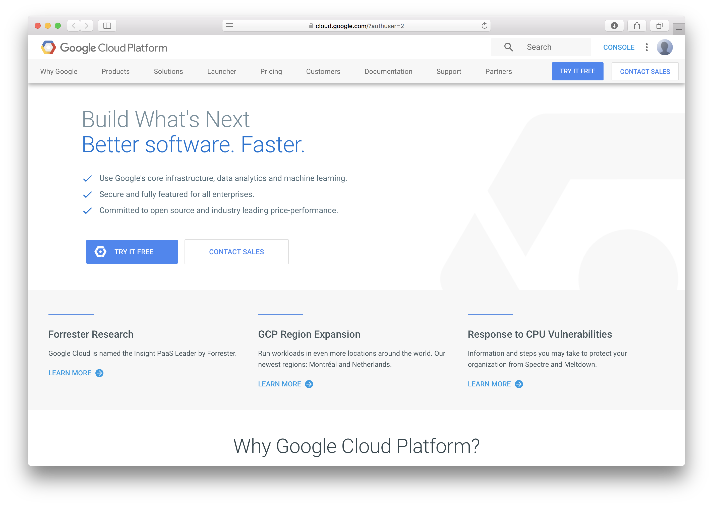
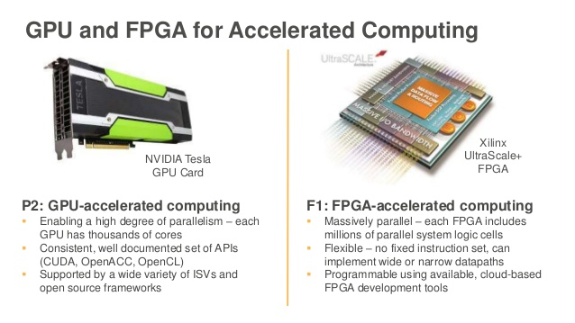

cd
mkdir .ssh
chmod go-rx .ssh/
cd .ssh
vi authorized_keysCloud Computing
Biostat 203B
1 What is cloud computing
Image source: https://towardsdatascience.com/how-to-start-a-data-science-project-using-google-cloud-platform-6618b7c6edd2.
Using a collection of remote servers for computation, data storage/manipulation, etc.
Pay for clock-cycles, storage, and network flow rather than hardware.
Computing when you need it:
- Scalable computing
- Scalable storage
2 It’s not in cloud


3 Why cloud computing is so popular
Scalability!
Adapt to fluctuating demand:
Websites with fluctuating traffic.
Large corporations use much more computing during business hours than off-business hours.
Efficiency:
Pay for what you need.
No need for hardware maintenance.
Less waiting for fixed compute-time jobs.
4 Why we (students, researchers) care about cloud computing
Our computational demands often fluctuate dramatically.
Grant resource management.
- Old style: buy computer with grant X money, must use computer only for grant X research.
- New style: buy computing time for grant X research with grant X money.
- Old style: buy computer with grant X money, must use computer only for grant X research.
Massive computing when you need it
- On the cloud you can run your job on 10,000 machines for one hour for the same price as running it on one machine for 10,000 hours!
- Using AWS EC2 spot instances, this can be done for $700 an hour, and gets you super-computer performance.
- It may be more compelling to know that you can get 8 cores for around $0.27 an hour.
5 Vendors

There are many vendors out there. Good for customers (us). They all work similarly.
- Amazon web services (AWS).
Google cloud platform (GCP).
Microsoft Azure.
IBM cloud.
We will demonstrate how to start using GCP.
6 Using GCP Compute Engine: basic workflow
Set up GCP account.
Configure and launch VM instance(s).
Set up connection (SSH key).
Install software you need.
Run your jobs.
Transfer result.
Terminate instance(s).
7 Step 0: set up GCP account

Go to https://cloud.google.com.
Choose the Google account you want to use for GCP.
If you click
Try it freeat https://cloud.google.com and fill out requisite information, you will get $300 credit which expires in1 year3 months. You do not need to use it for this course.After email verification and redeeming the coupon, a project
My First Projectis created in GCP.
GCP free trial:
Some resources are always free: 1 f1-micro VM instance, 30GB of standard persistent disk storage, etc.
General pricing can be found on this page.
8 Step 1: configure and launch a VM instance

Go to GCP console, create a project.
Go to Compute Engine, click
CREATE INSTANCE.Give a meaningful name, e.g,
biostat-203b.Choose
us-west2zone (Los Angeles).Machine type: 2 vCPUs, 7.5GB memory should suffice for this course.
Boot disk: CentOS 7, standard persistent disk (or SSD) 50GB should sufficie for the kind of copmuting in this course.
These settings can be changed anytime. Typical paradigm: develop code using an inexpensive machine type and switch to a powerful one when running computation intensive tasks.
Click
Create.
At the
VM Instancespage, you can see a list of all instances in your project and their IP addresses. We use the external IP address, e.g.,XX.XXX.XXX.XXX, for SSH connection.
- Note if we stop the instance and start again. The external IP address may change. To keep a fixed external IP address, go to
VPC networkthenExternal IP addressesand make the desired external IP addressstatic(vs ephemeral). Note that if no instance is using astaticIP address, you will be charged for the idlestaticIP.
9 Step 2: set up SSH keys
There are several ways to connect to the VM instance you just created. Most often we want to be able to SSH into the VM instance from other machines, e.g., your own laptop. By default, VM instance only accept key authentication. So it’s necessary to set up the SSH key first.
Option 1: SSH in browser
- Click the
SSHbutton onVM Instancespage will bring out a terminal in browser as super user, e.g.,huazhou(my gmail account name).
Option 2: Manually set up SSH
- First use browser SSH to set up your own SSH keys:
Copy your public key to authorized_keys and set permission
chmod go-rwx authorized_keys- Now you should be able to connect to the VM instance from any machine with the matching private key:
ssh username@XX.XXX.XXX.XXXOption 3: Set up instance specific key in GCP
On the VM Instances page, click the instance you want to set up key. Click Edit.
We can enter public key in the SSH Keys section.
Option 4: Set up project-wide key in GCP
Click the Metadata tab on the left.
Enter public key in the SSH Keys section. This will apply to all instances in the project.
10 Step 3: install software
yum is the default package management tool on CentOS. Most software can be installed via sudo yum. sudo executes a command as a superuser (or root).
10.1 Install R/R Studio Server
- Install the epel-repository (if not yet)
sudo yum install epel-release -y- Install R (it takes a couple minutes)
sudo yum install R -y- Install
wget, which is a command line tool for downloading files from internet.
sudo yum install wget -y- Download and install the most recent R Studio Server.
wget https://download2.rstudio.org/server/centos7/x86_64/rstudio-server-rhel-2021.09.2-382-x86_64.rpm
sudo yum install rstudio-server-rhel-2021.09.2-382-x86_64.rpm- The R Studio service starts immediately. Let’s check if it is running properly by triggering the following command.
sudo systemctl status rstudio-server.service- By default, port 8787 used by R Studio Server is blocked by VM firewall. On GCP console, go to
VPC networkand thenFirewall rules, create a rule for R Studio Server (tcp: 8787), apply that rule to your VM instance.
- Now you should be able to access R Studio Server on the VM instance by pointing your browser to address
http://XX.XXX.XXX.XXX:8787.
10.2 Set up a regular user
Key authentication suffices for most applications.
Unfortunately R Studio Server (open source edition) does not support key authentication. That implies if you want to use R Studio Server on the VM Instance, you need to enable username/password authentication.
You can set password for a user by
passwdNow you should be able to log in the R Studio Server from browser
http://XX.XXX.XXX.XXX:8787using your username and corresponding password.To SSH into VM instance as the regular user, you need to set up the key (similar to set up key for superuser).
If you want to enable a regular user as a sudoer, add it into the
wheelgroup:
su - huazhou
sudo usermod -aG wheel username
su - username10.3 Install R packages
- Install R packages using
install.packages()function in R. Install as superuser will make packages availalbe to all users on this instance. For example,
sudo R -e 'install.packages("tidyverse")'To set the CRAN mirror globally, we write following lines into the
/usr/lib64/R/etc/Rprofile.sitefile:options(repos = c(CRAN = "https://cran.rstudio.com")).When installing R packages, it often fails because certain Linux libraries are absent.
Pay attention to the error messages, and install those libraries using
yum.E.g., try installing
tidyversemay yield following errors
ERROR: dependencies ‘httr’, ‘rvest’, ‘xml2’ are not available for package ‘tidyverse’
* removing ‘/usr/lib64/R/library/tidyverse’You can install these Linux dependencies curl, openssl, and libxml2 by:
sudo yum install curl curl-devel -y
sudo yum install openssl openssl-devel -y
sudo yum install libxml2 libxml2-devel -y10.4 Install Git
- Install Git on VM instance:
sudo yum install git -yFor smooth Gitting, you need to put the private key matching the public key in your GitHub account in the
~/.sshfolder on the VM instance.Now you can
git cloneany repo to the VM instance to start working on a project. E.g.,
git clone https://github.com/ucla-biostat203b-2020winter/ucla-biostat203b-2020winter.github.io.git10.5 (Optional) Install Julia
sudo yum install yum-utils -y
sudo yum-config-manager --add-repo https://copr.fedorainfracloud.org/coprs/nalimilan/julia/repo/epel-7/nalimilan-julia-epel-7.repo
sudo yum install julia -y11 Step 4: run your jobs
Now you have R and R Studio on the VM instance.
The simpliest way to synchronize your project files across machines is Git, e.g.,
git clone https://github.com/ucla-biostat-203b/2022winter.gitSet up and run your jobs as usual.
You can check CPU usage on the GCP console.
You can set notification when CPU usage falls below a threshold (so you know the job is done).
12 Step 5: transfer results
- Transfer results as usual: Git, scp, sftp.
13 Step 6: terminate instance(s)
- Don’t forget to terminate your instance(s)!
14 Go forth and use the cloud
Using cloud (AWS, Azure, GCP, …) is easy, as far as we master the fundamentals such as Linux, scripting, SSH, keys, and so on.
Easy to launch cluster instances or other heavily customized instances (SQL server, BigQuery, ML engine, Genomics, …).
Massive computing at your fingertips.
- Amazon EC2 P2 instances offer on a single virtual machine 16 GPUs, with 40,000 parallel processing cores, and 732 GB memory, yielding 70 teraflops of single precision floating point performance or 23 teraflops of double-precision.

- GCP offers TPU (tensor processing units) for deep learning. Each Cloud TPU offers up to 180 teraflops of computing performance as well as 64 gigabytes of ultra-high-bandwidth memory.
- To put it in perspective, 180 teraflops is equivalent to the most powerful high performance cluster (HPC) in 2005, according to following slide by Jack Dongarra.

15 Final word
Before requesting massive computing resources, always examine your code and algorithm. Most likely you can gain order of magnitude efficiency (say 100 folder speedup) by educated choice of algorithms and careful coding. You’ll see a dozen examples in Spring (Biostat 257).